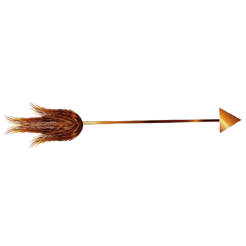
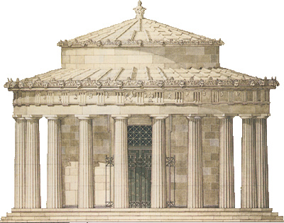

Eros cumplió su amenaza. Para vengarse de Apolo, se valió del arma que mejor conocía: el amor. Aquel mismo día, lanzó dos flechas desde el aire: una de oro y otra de hierro. La de oro tenía la punta de diamante y servía para enamorar a la gente, mientras que la de hierro estaba rematada con una punta de plomo y provocaba un rechazo absoluto del amor. Eros lanzó la flecha de oro contra el corazón de Apolo, y disparó la de hierro contra el pecho de Dafne, una de las ninfas más hermosas de Tesalia. Como los dos flechazos fueron indoloros, ni Apolo ni Dafne se dieron cuenta de que sus vidas estaban a punto de cambiar para siempre.
Hasta aquel día, Apolo ni siquiera se había fijado en Dafne. Para él, era una ninfa más, a la que a veces veía cazando por el monte o bañándose en el río. En cambio, desde que recibió el flechazo de Eros, no pudo quitársela de la cabeza. Se pasaba todo el día pensando en ella, y abandonó la caza y el canto, a los que solía dedicar la mayor parte de su tiempo. Lo único que le apetecía era contemplar a Dafne, pues su corazón ardía de amor igual que la paja arde en el fuego. Dafne, en cambio, no quería saber nada de Apolo, y cada vez que lo veía, echaba a correr o se escondía entre los árboles, porque su misma presencia le hacía sentir incómoda. Llegó un día, sin embargo, en que no pudo esquivar a Apolo, y el dios aprovechó la ocasión para pedirle que se casara con él.
- Jamás me casaré -dijo Dafne-: el amor no me interesa.
- ¿Es que un dios como yo te parece poca cosa?
- No es que desprecie tu amor, Apolo: es que no quiero el amor de nadie. Nací libre, y me he propuesto permanecer libre hasta el fin de mis días.
¿Que flecha lanzó Eros a Apolo?
